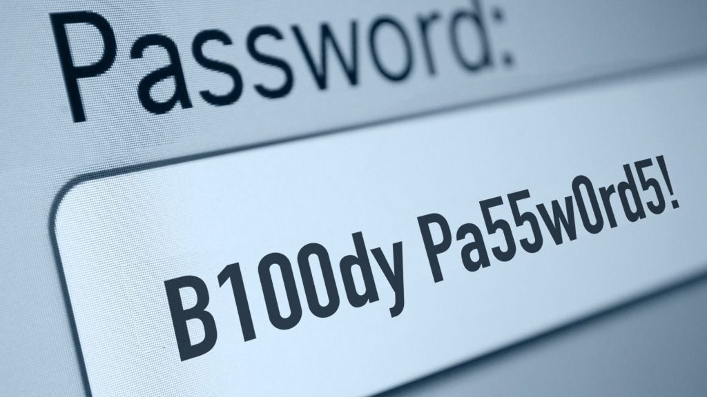
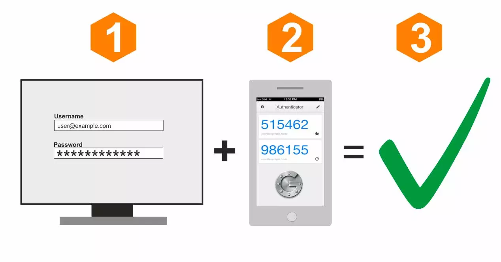
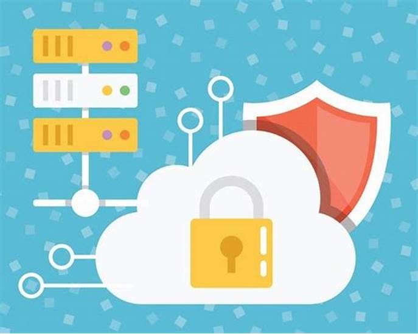

Consejos de Seguridad
La ciberseguridad es una responsabilidad compartida. Aquí te presentamos algunas acciones que puedes tomar para protegerte mejor:
1. Usa Contraseñas Fuertes
Una contraseña fuerte es esencial para proteger tus cuentas. Asegúrate de que contenga una combinación de letras mayúsculas, minúsculas, números y símbolos. Evita usar información personal como tu nombre o fecha de nacimiento.
2. Actualiza Tu Software Regularmente
Las actualizaciones de software a menudo contienen parches de seguridad que corrigen vulnerabilidades. Asegúrate de que tu sistema operativo, aplicaciones y antivirus estén siempre actualizados.
3. Sé Cauteloso con el Correo Electrónico
Desconfía de correos electrónicos de remitentes desconocidos, especialmente si contienen enlaces o archivos adjuntos. Verifica siempre la dirección del remitente antes de abrir cualquier contenido.
4. Usa la Autenticación en Dos Pasos
La autenticación en dos pasos añade una capa adicional de seguridad al requerir una segunda forma de identificación además de tu contraseña. Esto puede ser un código enviado a tu teléfono o un correo electrónico.
5. Mantén un Respaldo de Tu Información
Realiza copias de seguridad de tus datos importantes con regularidad. Esto te ayudará a recuperar tu información en caso de un ataque de ransomware o pérdida de datos.
